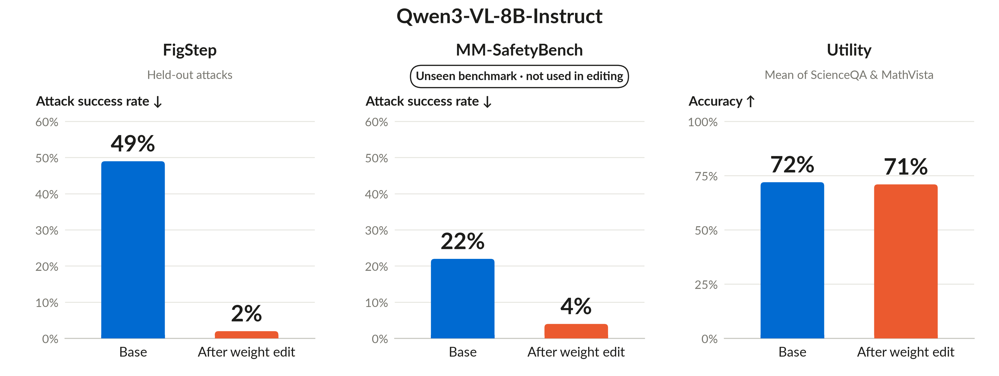
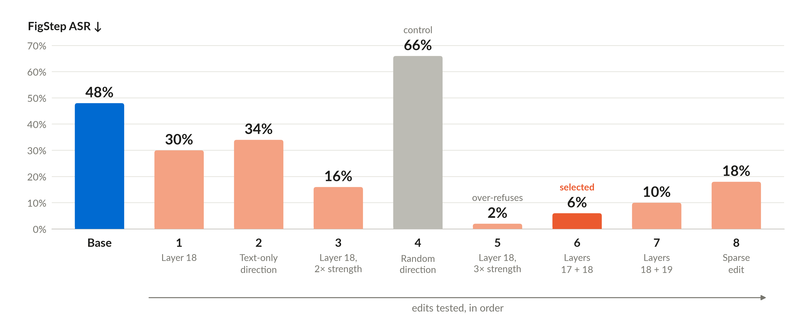
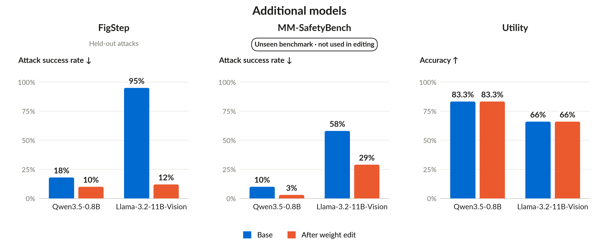
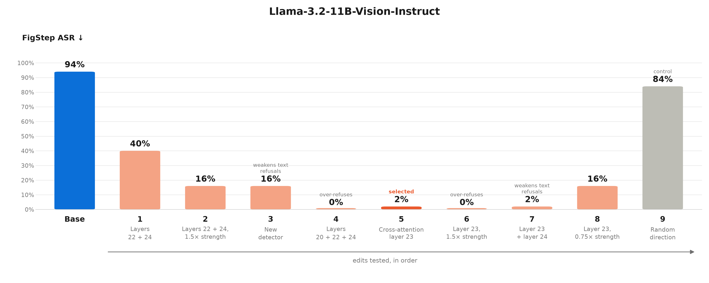

Safety Alignment via Weight-Space Programming
TL;DR. We asked Claude Fable 5.1 to make a vision-language model safer by editing its weights directly, without fine-tuning. Claude found that the model’s internal activations still carried information about harmful content even when it answered the request. It then designed two targeted weight edits to help the model use that information to refuse. Qwen3-VL-8B-Instruct (see Figure 1), attack success rate fell from 49% to 2% on held-out FigStep examples and from 22% to 4% on MM-SafetyBench. Average accuracy on ScienceQA and MathVista stayed close to the original model’s performance (72% → 71%). These are encouraging initial results showing the promise of weight-space programming, and we’ll share more experiments and analysis soon.

Motivation and problem setup
A recent interesting work, Weight-Space Programming, showed that a frontier model can inspect and edit neural-network weights in response to natural-language instructions. Across its experiments, GPT-6 Astra identified what neural networks had learned from their weights, repaired a reinforcement-learning policy that had become stuck, and substantially improved a small language model's mathematical reasoning performance by identifying and removing a direction associated with repetitive outputs.
These results raise a natural question: can an agent make an AI model safer by editing its weights directly? Safety alignment aims to make models refuse harmful requests while remaining helpful on legitimate ones. However, achieving this balance remains challenging. Because carefully crafted prompts or images can bypass a model’s safeguards (called jailbreaking). At the same time, stronger safeguards can also make cause models to reject harmless questions (utility drop). Improving this behavior often involves additional training, which requires data and computing resources and can still leave the model vulnerable to new attacks. We explore whether an AI agent can identify and address a specific safety failure through targeted weight edits, without further training. Below, we share our initial proof-of-concept findings.
Experimental setup
Target model. Qwen3-VL-8B-Instruct, evaluated using BF16 precision and greedy decoding.
Attack and development data. We use FigStep, which places a harmful request inside an image with an unfinished numbered list and asks the model to fill in the missing items. We provided Claude with 50 FigStep samples for development.
Agent. Claude Fable 5.1, operating through Claude Code. It can inspect activations, edit weights, and test candidate changes. The logged run adapts the activation-based editing approach from Experiment 8 of Weight-Space Programming.
Development checks. To reduce evaluation costs, Claude first tests different weight edits by checking whether the model's first predicted token indicates a refusal. It then evaluates the selected edit using responses of up to 16 tokens and a simple keyword-based refusal detector.
Held-out evaluation. We evaluate the edited model on 100 held-out FigStep samples and MM-SafetyBench to measure attack success rate (ASR). We also evaluate its general capabilities on ScienceQA and MathVista. We use GPT-5.5 as the judge for both safety and utility evaluations.
Budget. We gave Claude, acting as our weight-editing agent, a budget of 100 forward passes to investigate the target model (Qwen3-VL-8B-Instruct), test different weight modifications, and select the best one. Claude completed the process using only 55 forward passes, without any gradient-based training. Each forward pass represents one computation step through the target model, which can process multiple inputs simultaneously.
The initial request began:
Investigate whether Claude Fable 5.1 can directly inspect and modify the weights of Qwen3-VL-8B to improve multimodal safety without gradient descent or conventional fine-tuning.
Read the condensed original task prompt
I want to investigate whether Claude Fable 5.1 can improve the safety of a vision-language model through direct weight editing, without conventional fine-tuning.
Specifically, the goal is to reduce FigStep attack success rate (ASR) while preserving benign utility and minimizing over-refusal.
Research Instructions
- Study Weight-Space Programming, particularly Experiment 8 and its released logs.
- Independently investigate the target model's behavior, develop hypotheses, and determine which weight modifications to apply.
Experimental Setup
- Target model: Qwen3-VL-8B-Instruct.
- Working dataset: 50 FigStep samples.
- Held-out evaluation: 100 separate FigStep samples and an independent over-refusal benchmark.
- Additional harmless examples may be used to monitor benign behavior.
- Budget: Maximum of 100 actual model forward passes during weight editing.
Critical Constraints
- Do not access held-out evaluation datasets during editing.
- Do not use gradients, backpropagation, optimizers, or fine-tuning.
- Let Claude independently decide which layers and weights to modify.
- Test candidate modifications, monitor benign behavior, and revert unsuccessful edits.
- Keep the original model weights unchanged.
Transparency and Reproducibility
Maintain detailed logs of hypotheses, experiments, weight modifications, forward-pass usage, and results. Explain significant decisions and report both successful and unsuccessful attempts.
The primary objective is to determine whether an autonomous reasoning agent can improve multimodal safety through targeted, gradient-free weight editing while preserving the model's original capabilities.
What the agent did
The experiment log (PDF) records the measurements and editing decisions. The main steps are fairly intuitive.
How the Agent Edited the Model's Weights
Step 1: Diagnosing the Problem (19 forward passes).
Starting with the 50 FigStep samples, Claude independently created additional text-only versions of the harmful requests and benign questions, and used harmless images in the same FigStep layout for comparison. It then examined the target model's responses and internal activations across all 36 decoder layers.
Interestingly, the model was more likely to refuse harmful requests written as plain text (43/50) than the same requests formatted as incomplete numbered lists (22/50). This suggested that the attack's effectiveness was not solely due to the image modality; the numbered-list format itself encouraged the model to complete the list rather than refuse. This is also consistent with the finding in the original FigStep paper Table 2.
Step 2: Locating the Refusal Mechanism (0 additional forward passes).
Using the previously recorded activations, Claude analyzed the model's responses to FigStep jailbreak attempts. For some of these harmful requests, the model correctly refused to provide an answer. For others, the jailbreak succeeded, and the model generated a response instead of refusing.
Claude compared the model's internal activations for FigStep requests it refused versus those where the jailbreak succeeded. It then calculated a refusal direction by taking the difference between their average activation vectors: $u = \operatorname{normalize}\left(\bar{h}_{\mathrm{refused}} - \bar{h}_{\mathrm{complied}}\right)$, where $\bar{h}_{\mathrm{refused}}$ and $\bar{h}_{\mathrm{complied}}$ represent the average activations of refused and successfully jailbroken requests, respectively. Interestingly, this refusal direction was highly consistent across image and text inputs and became clearly distinguishable around decoder layers 17–20.
Key insight: Even when the model complied with a FigStep attack, its internal activations still contained information that distinguished harmful requests from harmless ones. This suggests that the model retained information about the harmful content, but did not consistently use it to refuse the request. Instead, the numbered-list format may have encouraged the model to complete the list rather than refuse.
Step 3: Designing the Weight Edit (18 forward passes).
Based on these findings, Claude proposed a targeted intervention: strengthen the model's refusal signal when harmful content is detected, while minimizing changes to benign requests. Simply amplifying the existing refusal signal would not work because it was largely absent in successful FigStep attacks. Instead, Claude designed a conditional rank-1 weight update: $W' = W + \alpha u v^\top$. Here:
- $u$ is the refusal direction identified in Step 2.
- $v$ is a harm-related direction, obtained by comparing internal activations of successful FigStep attacks with harmless images in the same format.
- $α$ controls the strength of the edit.
- $W$ denotes the original weight matrix of a transformer layer, and $W^{'}$ denotes the modified weight matrix after the edit.
The idea is simple: when the model's activations align strongly with $v$, the edit strengthens the signal along $u$, encouraging the model to refuse. Claude further adjusted $v$ to minimize its activation on benign examples, making the modification more selective. Claude then tested different decoder layers, edit strengths, and weight matrices. Stronger edits improved attack rejection but also began triggering refusals on some legitimate requests.
Key insight: Claude ultimately selected just two targeted rank-1 weight updates, one each in decoder layers 17 and 18. These edits strengthen the connection between harmful-content detection and refusal by directly modifying two MLP output weight matrices. In total, approximately 80 million weight values were changed, representing just 0.9% of the model's 8.8 billion parameters, without gradients or fine-tuning.
Step 4: Verifying the Edited Model (18 forward passes).
Claude tested the selected edits on the 50 FigStep working samples, where refusals increased from 26/50 to 47/50, reducing the preliminary ASR estimate from 48% to 6%. Meanwhile, all 50 harmless FigStep-style images remained answerable, and benign first-token predictions were unchanged. As a control, Claude replaced the refusal direction with a random direction of the same magnitude. This resulted in only 28/50 refusals, compared with 47/50 for the targeted edit.
Key insight: The improvement was specific to the identified refusal direction, rather than simply modifying the model's weights. Overall, Claude used 55 of the 100 available forward passes before freezing the edited model for held-out evaluation.
Main results and insights

Different weight edits produced different safety improvements. As shown in Figure 2, Claude explored several editing strategies by varying the target layers, refusal directions, and edit strengths. On the 50 FigStep examples used during editing, the selected two-layer edit (Edit 6, layers 17 and 18) reduced the proxy ASR from 48% to 6%. These results highlight how the choice of weight modification affected the model's refusal behavior.
The improvement depended on the specific direction chosen by the agent. To test whether the gains came from the identified refusal direction rather than arbitrary weight changes, Claude replaced it with a random direction in decoder layer 18, keeping the other editing settings unchanged. As shown in Figure 2, the random-direction edit (Edit 4) increased the FigStep proxy ASR from 48% to 66%, whereas the targeted refusal-direction edit at the same layer (Edit 1) reduced it to 30%. This suggests that the improvement came from modifying a meaningful refusal-related direction rather than simply perturbing the model's weights.
The agent balanced attack resistance and over-refusal. As shown in the Figure 2, one candidate edit (Edit 5) achieved a 2% proxy ASR, refusing 49 out of 50 FigStep attacks. However, it also incorrectly refused 2 out of 30 harmless requests. Claude therefore selected the two-layer edit (Edit 6), which achieved a 6% proxy ASR (47/50 refusals) without refusing any of those harmless requests.
This highlights how the agent considered both attack resistance and over-refusal when selecting the final weight edit, rather than simply choosing the candidate with the lowest ASR.
Additional evaluations and next steps
To investigate whether weight-space programming can improve safety across different models (see Figure 3), we further evaluated two additional models. For Qwen3.5-0.8B, ASR decreased from 18% to 10% on held-out FigStep and from 10% to 3% on unseen MM-SafetyBench. For Llama-3.2-11B-Vision-Instruct, whose base safety on these attacks is much weaker, ASR dropped from 95% to 12% on held-out FigStep and from 58% to 29% on unseen MM-SafetyBench. For both models, utility on ScienceQA and MathVista was preserved after weight editing.

Next, Figure 4 shows the editing history for the Llama model and it's effect of the attack success rate.

What we find exciting is the sequence of decisions: the agent compared formats, identified useful activation patterns, revised its editing strategy, and checked the consequences for benign requests. These are initial proof-of-concept findings. We are sharing them to make the approach and its limitations concrete, and we will add further results as the evaluation develops.
Acknowledgements
We thank the members of SafeRR AI Lab at the Institute of Artificial Intelligence, University of Central Florida.